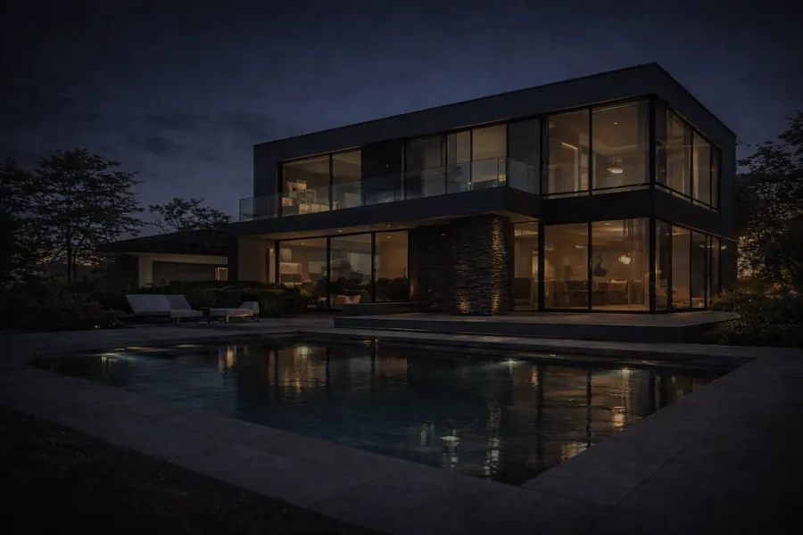

Nowoczesna technologia w eleganckiej formie
Instalacje elektryczne, automatyka i inteligentne systemy dla wymagających inwestycji.
O nas
ATON to pasja do technologii ukryta w precyzyjnych instalacjach. Wierzymy, że nowoczesna elektryka powinna być niewidzialnym sercem domu — bezpiecznym i gotowym na wyzwania przyszłości.
Od lat dostarczamy rozwiązania dla najbardziej wymagających inwestycji, łącząc wiedzę inżynierską z wyjątkową dbałością o estetykę wykonania.
Nasza filozofia
Projektujemy komfort i spokój ducha naszych klientów, opierając się na komponentach najwyższej klasy.
Więcej o nasOferta
Realizujemy inwestycje kompleksowo: od analizy potrzeb i projektu, po wykonanie, uruchomienie oraz dokumentację. Projektujemy i wykonujemy instalacje, które mają działać niezauważalnie — bezpiecznie, stabilnie i estetycznie.

Instalacje elektryczne
Okablowanie domów i budynków od stanu surowego do montażu osprzętu. Każdy przewód opisany.
Szczegóły
Automatyka i smart home
Oświetlenie, rolety, ogrzewanie i energia sterowane z jednego miejsca – zaplanowane już w stanie surowym.
Szczegóły
Fotowoltaika i magazyny energii
Instalacje dachowe i gruntowe, falowniki hybrydowe, magazyny energii z monitoringiem w aplikacji.
Szczegóły
Rozdzielnice i dokumentacja
Rozdzielnice natynkowe i podtynkowe z ochroną przeciwprzepięciową, opisem obwodów i schematem.
Szczegóły
Instalacje odgromowe
Zwody, maszty i uziemienia na dachach płaskich i skośnych, także przy fotowoltaice.
Szczegóły
Pomiary i odbiory
Pomiary odbiorcze nowych instalacji i okresowe kontrole z protokołami.
SzczegółyRealizacje
Zdjęcia z naszych budów – bez retuszu i bez aranżacji. Tak wyglądają instalacje, zanim zakryje je tynk.


Porządek, który zostaje na lata
Na zdjęciu obok jest zwykła puszka z jednej z naszych budów. Ma opis obwodu, uporządkowane złączki i przewody przycięte na równo. Nikt tego nie zobaczy po tynkowaniu – ale zobaczy to elektryk, który za dziesięć lat będzie szukał usterki.
Tak samo budujemy rozdzielnice: aparaty w logicznych rzędach, opis każdego obwodu, schemat w dokumentacji. To jest ta „dbałość o estetykę wykonania”, o której piszemy.
Jak pracujemy
Analiza potrzeb
Rozmawiamy o domu, sposobie korzystania z niego i planach na przyszłość. Oglądamy projekt albo budynek.
Projekt
Rozplanowanie punktów, podział na obwody, dobór zabezpieczeń i systemów. Wycena z rozpisanym zakresem.
Wykonanie
Okablowanie, rozdzielnica, montaż urządzeń. Na budowie zostawiamy porządek i opisane przewody.
Uruchomienie
Konfiguracja automatyki, falownika i magazynu. Pokazujemy, jak wszystko obsługiwać.
Dokumentacja
Schemat rozdzielnicy, opis obwodów i protokoły pomiarów – komplet na lata.
Najczęstsze pytania
Od czego zacząć instalację elektryczną w domu jednorodzinnym?
Od rozmowy i rzutów domu. Zanim powstanie pierwsza bruzda, ustalamy, gdzie stoją meble, gdzie będzie telewizor, kuchnia i biurko, jakie urządzenia potrzebują osobnych obwodów i czy planujecie smart home, fotowoltaikę albo ładowarkę samochodu. Z tego powstaje rozplanowanie punktów, na którym pracujemy na budowie.
Czy smart home trzeba zaplanować już na etapie budowy?
Najlepiej tak. W stanie surowym da się poprowadzić przewody do rolet, czujników i szafy automatyki bez kucia. Systemy bezprzewodowe można dołożyć później, ale przewodowa podstawa daje więcej możliwości i mniej awarii.
Czy instalacja odgromowa jest obowiązkowa w domu jednorodzinnym?
Nie zawsze. O potrzebie ochrony decyduje ocena ryzyka według normy PN-EN 62305. Warto ją przeprowadzić przy domach w otwartym terenie, wyższych budynkach i wszędzie tam, gdzie na dachu jest fotowoltaika.
Czy do istniejącej fotowoltaiki można dołożyć magazyn energii?
Zwykle tak. Przy falowniku hybrydowym magazyn podłącza się bezpośrednio. Przy zwykłym falowniku sieciowym stosuje się rozwiązanie z osobnym falownikiem bateryjnym. Po oględzinach instalacji mówimy, która droga ma sens.
Jak często trzeba robić pomiary instalacji elektrycznej?
Według art. 62 Prawa budowlanego instalację elektryczną i piorunochronną budynku sprawdza się co najmniej raz na 5 lat. Pomiar robi się też po wykonaniu nowej instalacji, po większej przeróbce i często na potrzeby ubezpieczyciela.
Co dostanę po zakończeniu prac?
Działającą instalację, opisaną rozdzielnicę, schemat i protokoły pomiarów. Gdy za kilka lat coś będzie trzeba zmienić, Ty albo inny elektryk od razu zobaczycie, który obwód za co odpowiada.
Ile kosztuje instalacja elektryczna?
To zależy od metrażu, liczby punktów, zabezpieczeń i tego, czy w grę wchodzi automatyka. Wycenę przygotowujemy po rozmowie i obejrzeniu projektu – rzetelną, z rozpisanym zakresem, bez kwot „od”.
Porozmawiajmy o inwestycji
Opisz krótko, co budujesz albo co chcesz zmienić. Oddzwonimy, dopytamy o szczegóły i umówimy się na oględziny lub rozmowę nad projektem.
Telefon+48 697 296 018 E-mailbiuro@e-aton.pl